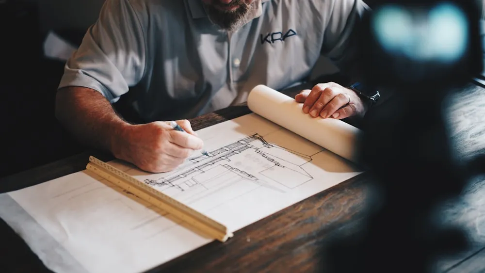

Ringkasan Inti
- Biaya bangun rumah per m² di Kedungkandang tahun 2026 terbagi dalam 3 kelas: Sederhana (Rp 3,5–4,2 juta/m²), Menengah (Rp 4,5–6,0 juta/m²), dan Mewah (> Rp 6,5 juta/m²).
- Kondisi kontur tanah yang relatif datar di Kedungkandang menghemat biaya cut and fill dan menghilangkan kebutuhan retaining wall beton berbiaya mahal.
- Aksesibilitas jalan lingkungan terhadap armada truk pengangkut material material curah sangat memengaruhi ongkos bongkar muat lokal.
- Penggunaan gambar kerja arsitektur DED dan dokumen RAB definitif mencegah pembengkakan biaya tak terduga hingga 20%.
Daftar Isi Artikel
Biaya bangun rumah per m2 di Kedungkandang 2026 dipengaruhi kelas material, kondisi lahan, dan aksesibilitas distribusi material ke lokasi proyek. Sebagai salah satu kecamatan dengan perkembangan permukiman dan infrastruktur jalan tol paling pesat di Kota Malang, Kedungkandang menjadi kawasan primadona bagi keluarga muda maupun investor yang ingin mendirikan hunian tinggal yang nyaman dengan nilai investasi tanah yang terus bertumbuh.
1. Apa Saja Komponen yang Memengaruhi Biaya Bangun Rumah per m2 di Kedungkandang?
Menyusun anggaran pembangunan rumah membutuhkan pemahaman detail terhadap elemen-elemen pekerjaan konstruksi. Secara umum, biaya konstruksi per meter persegi di Kedungkandang terbagi ke dalam beberapa pos pekerjaan utama:
- Pekerjaan Struktur Utama (Pondasi, Kolom, Balok, Dak Beton): Menyerap sekitar 35–40% dari total anggaran. Di Kedungkandang, tanah keras umumnya berada pada kedalaman 1,5 hingga 2,5 meter sehingga kombinasi pondasi batu kali dan footplat (cakar ayam) beton bertulang sudah sangat kokoh dan efisien.
- Pekerjaan Dinding & Penutup Atap: Menyerap 25–30% anggaran. Pilihan dinding bata ringan (hebel) semakin diminati di perumahan Kedungkandang karena bobotnya yang ringan dan kecepatan pemasangannya, dikombinasikan dengan atap rangka baja ringan dan genteng beton flat atau spandek berpasir.
- Finishing Arsitektural (Lantai, Cat, Kusen, Sanitair): Menyerap 20–25% anggaran. Posisi ini paling fleksibel karena dapat disesuaikan dengan selera pemilik rumah, mulai dari lantai granit 60x60 cm lokal Jawa Timur hingga kusen aluminium powder coating hitam.
- Instalasi Mekanikal, Elektrikal, dan Plumbing (MEP): Menyerap 8–12% anggaran, mencakup pipa air bersih, septictank biofil modern, titik saklar lampu LED, dan instalasi grounding listrik standar PLN.

2. Kenapa Biaya Bangun Rumah di Kedungkandang Dapat Berbeda dari Wilayah Lain di Malang?
Dibandingkan dengan kawasan perbukitan seperti Dau, Karangploso, atau Kota Batu, kawasan Kedungkandang memiliki keunggulan topografi dan logistik yang unik yang berdampak langsung pada efisiensi biaya konstruksi:
- Topografi Lahan yang Datar: Sebagian besar area Kedungkandang (seperti Buring, Sawojajar 2, Lesanpuro, dan Wonokoyo) berada pada kontur tanah relatif datar. Hal ini menghilangkan kebutuhan struktur dinding penahan tanah (retaining wall) beton bertulang yang di wilayah berkontur bisa menelan puluhan hingga ratusan juta rupiah.
- Aksesibilitas Dekat Gerbang Tol Madyopuro: Kemudahan akses jalan lingkar timur dan pintu tol memudahkan truk pengangkut pasir Lumajang, semen gresik, dan bata ringan langsung menuju depo material terdekat tanpa hambatan tanjakan terjal.
- Ketersediaan Tenaga Kerja Konstruksi Lokal: Kedungkandang berbatasan langsung dengan sentra pengrajin dan tukang bangunan ahli di Kabupaten Malang bagian timur, sehingga upah harian tukang lebih kompetitif dibanding mendatangkan tenaga kerja khusus dari luar daerah.
Catatan Arsitek Malang
Meskipun tanah Kedungkandang cenderung datar, sebagian area bekas persawahan atau urukan baru memiliki daya dukung tanah yang perlu dicermati. Selalu mintakan arsitek Anda melakukan uji sederhana sondir atau pengecekan kedalaman tanah keras sebelum menentukan dimensi footplat agar tidak terjadi penurunan pondasi sepihak di kemudian hari.
3. Bagaimana Cara Menghemat Biaya Tanpa Mengorbankan Kualitas Bangunan?
Menghemat anggaran pembangunan rumah tinggal di Kedungkandang dapat diwujudkan melalui perencanaan desain yang cermat sejak awal bersama konsultan arsitek berpengalaman:
- Desain Tata Ruang Terbuka (Open-Plan): Mengurangi sekat dinding masif yang tidak fungsional. Denah open-plan mengurangi volume pasangan bata, plesteran, dan cat, sekaligus membuat rumah tampak jauh lebih luas dan sejuk.
- Standarisasi Modul Material: Merancang bentang balok dan ukuran ruangan yang selaras dengan panjang kelipatan material standar (seperti besi beton 12 meter dan keramik 60 cm) untuk meminimalkan sisa potongan terbuang (waste material).
- Penggunaan Material Lokal Berkualitas: Memanfaatkan bata ringan dan semen produksi Jawa Timur yang memiliki rantai distribusi pendek sehingga harga beli lebih rendah tanpa mengurangi mutu kekuatan tekan.
- Dokumen Gambar Kerja Lengkap & Perizinan PBG: Memastikan dokumen teknis DED dan pengurusan PBG (Persetujuan Bangunan Gedung) selesai sebelum peletakan batu pertama guna menghindari denda administratif atau pembongkaran paksa.
4. FAQ (Pertanyaan Sering Diajukan)
Apakah biaya bangun rumah di Kedungkandang lebih murah dibanding kawasan berkontur seperti Dau?
Secara umum ya. Lahan datar di Kedungkandang tidak memerlukan pekerjaan galian tanah masif (cut and fill) serta terbebas dari pengeluaran struktur dinding penahan tanah (retaining wall) batu kali atau beton bertulang yang di Dau bisa menambah biaya 15–25% dari total anggaran.
Apakah biaya jasa arsitek sudah termasuk dalam estimasi biaya per m2?
Tidak, biaya jasa arsitek dihitung terpisah (biasanya Rp 70.000 – Rp 150.000/m²). Namun, melibatkan arsitek terbukti menghemat biaya keseluruhan karena arsitek menyusunkan spesifikasi material yang tepat dan RAB terperinci yang menjadi acuan kontrak kontraktor.
Bagaimana cara mendapatkan estimasi biaya yang lebih akurat untuk rumah di Kedungkandang?
Cara paling akurat adalah mengundang tim arsitek dan kontraktor untuk melakukan pengukuran lahan langsung, menganalisis lebar akses jalan gang menuju kavling, dan menyusun Rencana Anggaran Biaya (RAB) berdasarkan gambar teknis arsitektur yang sudah disetujui.
Rencanakan Anggaran Bangun Rumah di Kedungkandang
Konsultasikan kebutuhan denah, perhitungan RAB terperinci, dan pengurusan PBG bersama tim ahli Arsitek Malang.

Muhammad Musyaffa
Penulis & Tim Riset Arsitektur Maroon Arsitek Malang, spesialis manajemen konstruksi, estimasi Rencana Anggaran Biaya (RAB), dan perizinan PBG/SIMBG wilayah Malang Raya.